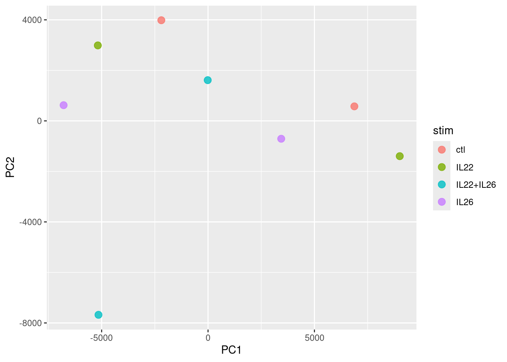
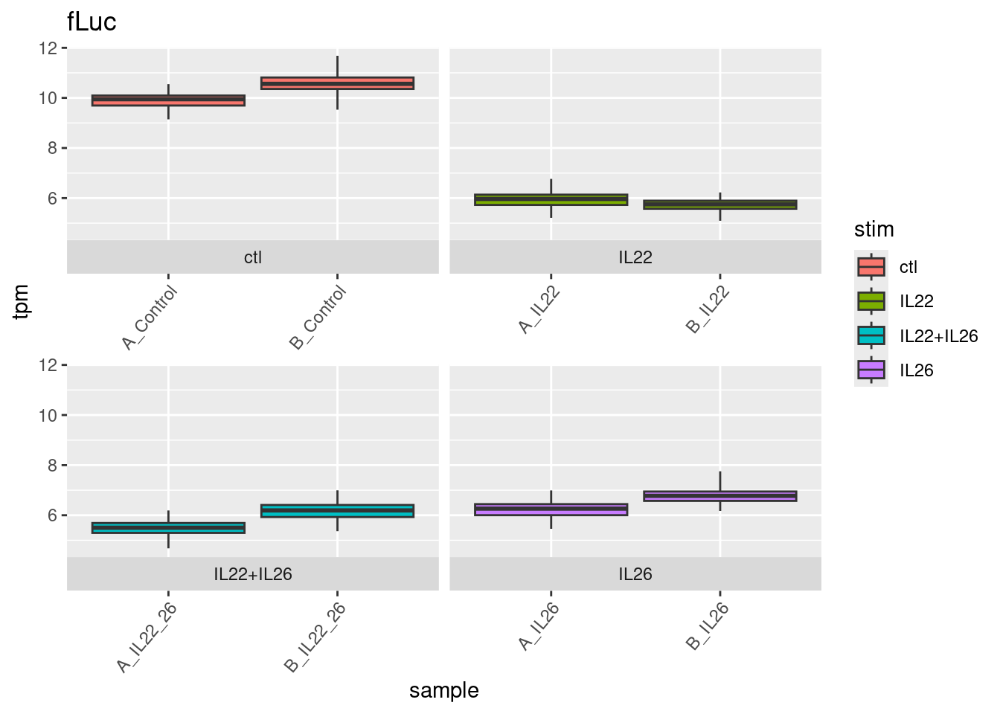
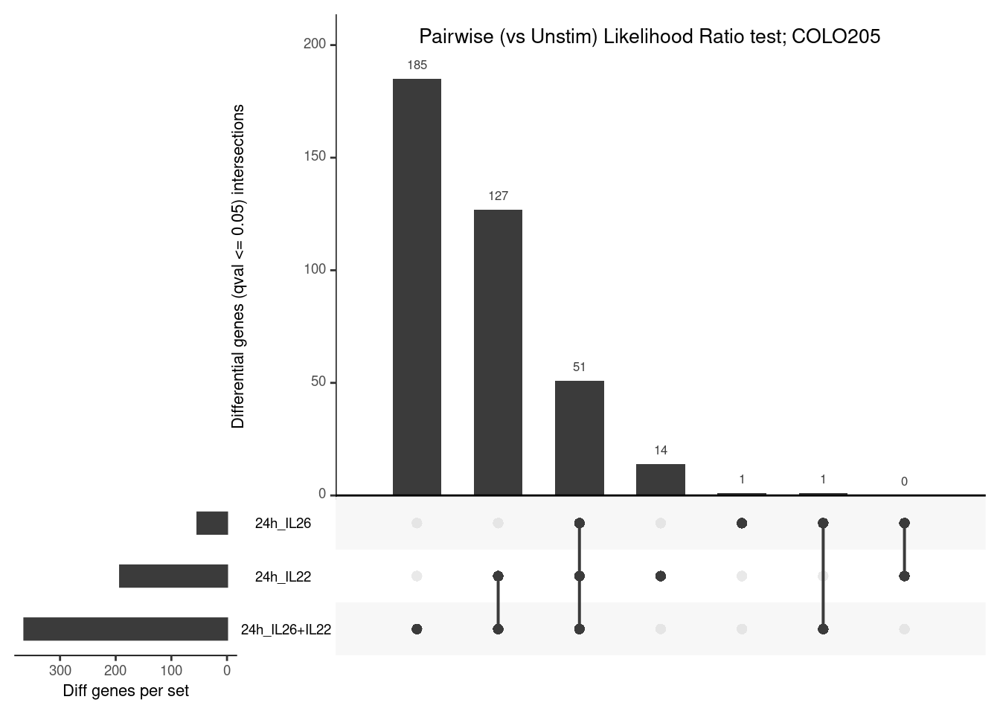

module load kallisto/0.46.1
kallisto quant -i /project/thelior_project/vchong/ensembl/release-115/kallisto-cDNA/cdna-release-115.idx -o ./A2_17_A4_T2 -b 100 -t 4 \
/project/thelior_project/vchong/novogene_exp8/fastp/A2_17_A4_T2.R1.fq.gz \
/project/thelior_project/vchong/novogene_exp8/fastp/A2_17_A4_T2.R2.fq.gz8. Differential expression - COLO205
V Chong | vanessa.chong@rdm.ox.ac.uk | 13 January 2026
Preamble
- Bulk RNAseq samples from COLO205 cells stimulated with IL22 only, both IL22 and IL26, or IL26 only. Controls were unstimulated.
- Stimulation was performed for 24 hours.
Points-of-note
- Samples sequenced in one batch with two biological replicates (
A_andB_) per condition.
These are all reflected in the sample metadata called into the analysis later.
Analysis
- Pairwise comparison between each IL stimulation vs control.
Pseudoalignment and estimation of transcript abundances
Kallisto with bootstraps (-b 100) enabled for downstream sleuth differential expression.
Differential expression analysis
Reference - “Differential analysis using p-value aggregation, on multiple conditions and covariates”
Initialise R environment
##### Set libPaths #####
.libPaths(c("/home/chongmorrison/R/x86_64-pc-linux-gnu-library/4.5",
"/home/chongmorrison/R/4.5.0-Bioc3.21"))
.libPaths() # check .libPaths[1] "/home/chongmorrison/R/x86_64-pc-linux-gnu-library/4.5"
[2] "/home/chongmorrison/R/4.5.0-Bioc3.21"
[3] "/usr/local/lib/R/site-library"
[4] "/usr/lib/R/site-library"
[5] "/usr/lib/R/library" ##### Memory/parallel cores usage #####
options(Ncpus = 12) # adjust no. of cores for base R
getOption("Ncpus", 1L)[1] 12##### Import all required packages #####
# data-wrangling and plots
library(tidyverse)
#library(RColorBrewer)
#library(viridis)
#library(ggpubr)
library(SummarizedExperiment)
library(dittoSeq)
library(UpSetR)
library(grid) # to add title to UpSetR plots
# analysis
library(biomaRt)
library(PCAtools)
library(sleuth)
library(gplots) # for Venn diagrams
library(rbioapi)
# to cite packages
library(grateful)
##### Set seed for reproducibility of random sampling #####
set.seed(584)Ensembl annotations - release 115
# run once and save locally for later use
ensembl <- biomaRt::useEnsembl(biomart = "genes", dataset = "hsapiens_gene_ensembl", version = 115)
annotations <- biomaRt::getBM(mart = ensembl, attributes=c("ensembl_transcript_id", "transcript_version", "external_gene_name", "ensembl_gene_id"))
annotations$ensembl_transcript_id_version <- paste(annotations$ensembl_transcript_id, annotations$transcript_version, sep=".")
## transcript-to-gene mapping
ttg <- dplyr::rename(annotations, target_id = ensembl_transcript_id_version, ens_gene = ensembl_gene_id, ext_gene = external_gene_name)
ttg <- dplyr::select(ttg, c('target_id', 'ens_gene', 'ext_gene'))
saveRDS(ttg, file = "./ttg115.rds")ttg <- readRDS("./ttg115.rds")Load sample metadata
metadata <- read.table(file = './metadata_06.01.26.csv', sep = ',', header=TRUE)
head(metadata) sample donor donor_status tissue tissue_subregion stim time batch
1 A2_7_A1 GI6544 Healthy TI ctl 24h three
2 A2_7_A2 GI6544 Healthy TI IL22 24h three
3 A2_7_A3 GI6544 Healthy TI IL26 24h three
4 A2_7_A4 GI6544 Healthy TI IL22+IL26 24h three
5 A2_7_B1 TIP-OX-168 Healthy TI ctl 24h three
6 A2_7_B2 TIP-OX-168 Healthy TI IL22 24h three
misc
1
2
3
4
5
6
path
1 /home/chongmorrison/Dropbox/VCM-StarBook/ResearchProjects/theliorbio/analyses/rnaseq/kallisto_v0.46.1_e115/A2_7_A1/abundance.h5
2 /home/chongmorrison/Dropbox/VCM-StarBook/ResearchProjects/theliorbio/analyses/rnaseq/kallisto_v0.46.1_e115/A2_7_A2/abundance.h5
3 /home/chongmorrison/Dropbox/VCM-StarBook/ResearchProjects/theliorbio/analyses/rnaseq/kallisto_v0.46.1_e115/A2_7_A3/abundance.h5
4 /home/chongmorrison/Dropbox/VCM-StarBook/ResearchProjects/theliorbio/analyses/rnaseq/kallisto_v0.46.1_e115/A2_7_A4/abundance.h5
5 /home/chongmorrison/Dropbox/VCM-StarBook/ResearchProjects/theliorbio/analyses/rnaseq/kallisto_v0.46.1_e115/A2_7_B1/abundance.h5
6 /home/chongmorrison/Dropbox/VCM-StarBook/ResearchProjects/theliorbio/analyses/rnaseq/kallisto_v0.46.1_e115/A2_7_B2/abundance.h5Explore sample-to-sample variation vs conditions
Extract sample-of-interest i.e. COLO205 samples. Exclude IL24_exp samples.
metadata.colo205 <- subset(metadata, donor == "COLO205" & !misc == "IL24_exp")
# Alternative code
#metadata.CO <- metadata %>% filter(donor == "COLO205" & !misc == "IL24_exp")Build sleuth object from metadata and kallisto abundances.
target_mapping = transcript groupings into genes, where aggregation_column is the column in target_mapping used to aggregate the transcripts. When both target_mapping and aggregation_column are provided, sleuth will automatically run in gene mode, returning gene differential expression results that came from the aggregation of transcript p-values.
transform_fun_counts (see here) so that downstream output fold changes are log2.
# run this on the command line outside of RStudio to make use of num_cores
so.colo205 <- sleuth_prep(metadata.colo205,
target_mapping = ttg, aggregation_column = "ens_gene",
extra_bootstrap_summary = TRUE,
read_bootstrap_tpm = TRUE,
transform_fun_counts = function(x) log2(x + 0.5),
num_cores = 2)
# save sleuth objects to reload without recomputing bootstraps
saveRDS(so.colo205, file = "./08_diffexp_sleuth-so-colo205.rds")so.colo205 <- readRDS("./08_diffexp_sleuth-so-colo205.rds")# conditions
plot_pca(so.colo205, units = "tpm", color_by = "stim")Warning: `aes_string()` was deprecated in ggplot2 3.0.0.
ℹ Please use tidy evaluation idioms with `aes()`.
ℹ See also `vignette("ggplot2-in-packages")` for more information.
ℹ The deprecated feature was likely used in the sleuth package.
Please report the issue at <https://github.com/pachterlab/sleuth/issues>.
Test for differentially-expressed genes - multi-condition
Fit a reduced model, which presumes abundances are equal in all conditions.
so.colo205 <- sleuth_fit(so.colo205, ~1, "reduced")Fit the full model which includes all parameters including stim.
so.colo205 <- sleuth_fit(so.colo205, ~stim, "full")# Re-save sleuth object to reload without recomputing everything
saveRDS(so.colo205, file = "./08_diffexp_sleuth-so-colo205.rds")Check fitted models. Note that ctl is not shown as a coefficient for stim, as it is denoted as the base level (the level not shown is the base level). sleuth automatically takes the first level (alphabetical by default) in the variable being tested to compare other conditions with.
so.colo205 <- readRDS("./08_diffexp_sleuth-so-colo205.rds")models(so.colo205)[ reduced ]
formula: ~1
data modeled: obs_counts
transform sync'ed: TRUE
coefficients:
(Intercept)
[ full ]
formula: ~stim
data modeled: obs_counts
transform sync'ed: TRUE
coefficients:
(Intercept)
stimIL22
stimIL22+IL26
stimIL26# in case one needs to set/change base level. Do this before sleuth_prep:
metadata$stim <- relevel(factor(metadata$stim), ref = "ctl")Then compare the full model to the reduced model with the likelihood ratio test (LRT).
so.colo205 <- sleuth_lrt(so.colo205, "reduced", "full")Use the full model with Wald test (WT) to compute b beta values, which approximates the log2 fold changes between conditions.
so.colo205 <- sleuth_wt(so.colo205, which_beta = "stimIL22", which_model = "full") # IL22 vs ctl
so.colo205 <- sleuth_wt(so.colo205, which_beta = "stimIL22+IL26", which_model = "full") # IL22+26 vs ctl
so.colo205 <- sleuth_wt(so.colo205, which_beta = "stimIL26", which_model = "full") # IL26 vs ctlObtain gene- and transcript-level differential expression results from LRT. Sleuth uses the p-values from comparing transcripts to make a gene-level determination and perform gene differential expression.
sleuth_table_gene <- sleuth_results(so.colo205, "reduced:full", "lrt", show_all = FALSE)
sleuth_table_gene <- dplyr::filter(sleuth_table_gene, qval <= 0.01)
head(sleuth_table_gene, 20) target_id ext_gene num_aggregated_transcripts sum_mean_obs_counts
1 ENSG00000100342 APOL1 11 68.22343
2 ENSG00000187908 DMBT1 10 44.33123
3 ENSG00000102144 PGK1 16 147.82573
4 ENSG00000122035 RASL11A 5 35.82563
5 ENSG00000148346 LCN2 9 48.49712
6 ENSG00000029993 HMGB3 12 97.02521
7 ENSG00000163435 ELF3 10 80.53383
8 ENSG00000185499 MUC1 9 59.32806
9 ENSG00000183628 DGCR6 8 49.19982
10 ENSG00000129521 EGLN3 6 59.31649
11 ENSG00000128335 APOL2 11 74.45958
12 ENSG00000112245 PTP4A1 7 48.12194
13 ENSG00000108984 MAP2K6 7 47.60479
14 ENSG00000131746 TNS4 5 43.95941
15 ENSG00000138496 PARP9 17 88.51910
16 ENSG00000069974 RAB27A 18 87.61262
17 ENSG00000179403 VWA1 6 35.23578
18 ENSG00000171564 FGB 6 25.42981
19 ENSG00000005981 ASB4 5 39.53932
20 ENSG00000027697 IFNGR1 20 104.12076
pval qval
1 1.427187e-24 2.217706e-20
2 3.878329e-19 3.013268e-15
3 1.756318e-17 9.097139e-14
4 5.090501e-17 1.977532e-13
5 2.710953e-14 8.425098e-11
6 8.997476e-13 2.330196e-09
7 1.213533e-12 2.423439e-09
8 1.247668e-12 2.423439e-09
9 4.631258e-12 7.996125e-09
10 5.578660e-12 8.668680e-09
11 7.047052e-12 9.954922e-09
12 1.244648e-11 1.611716e-08
13 1.357665e-11 1.622828e-08
14 1.700002e-11 1.886881e-08
15 2.750883e-11 2.849732e-08
16 7.059190e-11 6.452515e-08
17 6.793780e-11 6.452515e-08
18 9.614271e-11 8.299786e-08
19 2.838796e-10 2.321687e-07
20 6.371152e-10 4.950067e-07# without gene aggregation
sleuth_table_tx <- sleuth_results(so.colo205, "reduced:full", "lrt", show_all = FALSE, pval_aggregate = FALSE)
sleuth_table_tx <- dplyr::filter(sleuth_table_tx, qval <= 0.01)
head(sleuth_table_tx, 20) target_id ens_gene ext_gene pval qval
1 ENST00000325307.12 ENSG00000029993 HMGB3 1.373193e-07 0.002779067
2 ENST00000455349.2 ENSG00000226402 TRIM31 1.370555e-07 0.002779067
3 ENST00000427990.6 ENSG00000100342 APOL1 3.233965e-08 0.002779067
4 ENST00000164227.10 ENSG00000069399 BCL3 7.189291e-08 0.002779067
5 ENST00000303115.8 ENSG00000168685 IL7R 8.393682e-08 0.002779067
6 ENST00000379775.9 ENSG00000170525 PFKFB3 1.898022e-07 0.003201014
7 ENST00000367868.4 ENSG00000143167 GPA33 4.286717e-07 0.005422161
8 ENST00000325888.13 ENSG00000128591 FLNC 4.077328e-07 0.005422161
9 ENST00000331444.12 ENSG00000183628 DGCR6 6.032622e-07 0.006668133
10 ENST00000397278.8 ENSG00000100342 APOL1 7.738788e-07 0.006668133
11 ENST00000954626.1 ENSG00000198959 TGM2 7.907659e-07 0.006668133
12 ENST00000368468.4 ENSG00000111885 MAN1A1 7.547275e-07 0.006668133
13 ENST00000371225.4 ENSG00000184292 TACSTD2 1.128003e-06 0.007967673
14 ENST00000435572.7 ENSG00000123405 NFE2 1.181096e-06 0.007967673
15 ENST00000359426.7 ENSG00000156515 HK1 1.061219e-06 0.007967673
16 ENST00000621712.2 ENSG00000276559 BAAT 1.426251e-06 0.009020146
test_stat rss degrees_free mean_obs var_obs tech_var
1 34.75387 4.462702 3 13.326580 0.6375289 0.0007188526
2 34.75782 17.817721 3 8.414469 2.5453887 0.0162183247
3 37.72370 24.318833 3 10.266645 3.4741190 0.0300490721
4 36.08372 14.288176 3 10.290037 2.0411680 0.0033306403
5 35.76555 41.487922 3 8.213980 5.9268459 0.0394987926
6 34.08822 6.408684 3 11.689162 0.9155263 0.0088233723
7 32.41114 4.943761 3 12.136268 0.7062516 0.0011141156
8 32.51430 10.585718 3 9.647109 1.5122454 0.0215269209
9 31.70712 4.950560 3 10.998218 0.7072228 0.0037298754
10 31.19362 18.125150 3 13.328841 2.5893072 0.0007874739
11 31.14910 125.304874 3 5.716205 17.9006964 0.3790951795
12 31.24529 3.788831 3 13.599804 0.5412616 0.0004582598
13 30.41630 3.877946 3 12.991530 0.5539922 0.0002301207
14 30.32137 5.390760 3 9.943579 0.7701085 0.0061456116
15 30.54225 3.614646 3 11.836272 0.5163780 0.0048191720
16 29.93202 4.500279 3 10.208892 0.6428970 0.0041217893
sigma_sq smooth_sigma_sq final_sigma_sq
1 0.6368100 0.01706233 0.6368100
2 2.5291704 0.04286475 2.5291704
3 3.4440699 0.02230827 3.4440699
4 2.0378373 0.02215706 2.0378373
5 5.8873471 0.04711221 5.8873471
6 0.9067029 0.01668954 0.9067029
7 0.7051375 0.01613588 0.7051375
8 1.4907185 0.02727867 1.4907185
9 0.7034929 0.01859495 0.7034929
10 2.5885197 0.01706758 2.5885197
11 17.5216012 0.32502098 17.5216012
12 0.5408033 0.01780310 0.5408033
13 0.5537621 0.01643944 0.5537621
14 0.7639629 0.02465466 0.7639629
15 0.5115589 0.01645201 0.5115589
16 0.6387752 0.02269196 0.6387752# save result tables
write.csv(sleuth_table_gene, file = "./outputs/08_diffexp_sleuth-genes-qval001-stim-COLO205.csv", quote = FALSE, row.names = FALSE)
write.csv(sleuth_table_tx, file = "./outputs/08_diffexp_sleuth-transcripts-qval001-stim-COLO205.csv", quote = FALSE, row.names = FALSE)- There may be an effect with IL22 and/or IL26 stimulation compared to control. IL22- and/or IL26-specific effects can be explored with results from the two condition (pairwise) Wald tests, but we will use LRT in the next section to perform “clean” pairwise comparisons.
Save gene- and transcript-level differential expression results from WT (all targets) for later use.
write.csv((sleuth_results(so.colo205, "stimIL22", "wt", "full", show_all = FALSE)), file = "./outputs/08_diffexp_sleuth-genes-wt-all_IL22-ctl_COLO205.csv", quote = FALSE, row.names = FALSE)
write.csv((sleuth_results(so.colo205, "stimIL22+IL26", "wt", "full", show_all = FALSE)), file = "./outputs/08_diffexp_sleuth-genes-wt-all_IL22+26-ctl_COLO205.csv", quote = FALSE, row.names = FALSE)
write.csv((sleuth_results(so.colo205, "stimIL26", "wt", "full", show_all = FALSE)), file = "./outputs/08_diffexp_sleuth-genes-wt-all_IL26-ctl_COLO205.csv", quote = FALSE, row.names = FALSE)write.csv((sleuth_results(so.colo205, "stimIL22", "wt", "full", show_all = FALSE, pval_aggregate = FALSE)), file = "./outputs/08_diffexp_sleuth-transcripts-wt-all_IL22-ctl_COLO205.csv", quote = FALSE, row.names = FALSE)
write.csv((sleuth_results(so.colo205, "stimIL22+IL26", "wt", "full", show_all = FALSE, pval_aggregate = FALSE)), file = "./outputs/08_diffexp_sleuth-transcripts-wt-all_IL22+26-ctl_COLO205.csv", quote = FALSE, row.names = FALSE)
write.csv((sleuth_results(so.colo205, "stimIL26", "wt", "full", show_all = FALSE, pval_aggregate = FALSE)), file = "./outputs/08_diffexp_sleuth-transcripts-wt-all_IL26-ctl_COLO205.csv", quote = FALSE, row.names = FALSE)Check expression of fLuc.
plot_bootstrap(so.colo205, "fLuc", color_by = "stim", units = "tpm")
Test for differentially-expressed genes - pairwise
To get as “clean” results as possible for downstream Venn intersections, stick to same parameters throughout:
sleuth_lrtLikelihood Ratio test, accounting forbatchanddonordifferencessleuth_resultswithpval_aggregate = FALSEto extract transcript-level resultsqval <= 0.05filter for differentially-expressed transcripts/genes
IL22 only vs control
metadata.il22 <- subset(metadata.colo205, stim == "IL22" | stim == "ctl")# sleuth object and fit models
so.colo205.il22 <- sleuth_prep(metadata.il22,
target_mapping = ttg, aggregation_column = "ens_gene",
extra_bootstrap_summary = TRUE,
read_bootstrap_tpm = TRUE)Warning in sleuth_prep(metadata.il22, target_mapping = ttg, aggregation_column
= "ens_gene", : Your 'sample_to_covariates' data.frame contains NA values. This
will likely cause issues later.Warning in check_num_cores(num_cores): It appears that you are running Sleuth from within Rstudio.
Because of concerns with forking processes from a GUI, 'num_cores' is being set to 1.
If you wish to take advantage of multiple cores, please consider running sleuth from the command line.reading in kallisto resultsdropping unused factor levels....
normalizing est_counts
107984 targets passed the filter
normalizing tpm
merging in metadata
summarizing bootstraps
....so.colo205.il22 <- sleuth_fit(so.colo205.il22, ~1, "reduced")fitting measurement error models
shrinkage estimation
5 NA values were found during variance shrinkage estimation due to mean observation values outside of the range used for the LOESS fit.
The LOESS fit will be repeated using exact computation of the fitted surface to extrapolate the missing values.
These are the target ids with NA values: ENST00000496647.5, ENST00000520509.5, ENST00000526261.1, ENST00000601437.2, ENST00000916803.1
computing variance of betasso.colo205.il22 <- sleuth_fit(so.colo205.il22, ~stim, "full")fitting measurement error models
shrinkage estimation
computing variance of betas# check fitted models
models(so.colo205.il22)[ reduced ]
formula: ~1
data modeled: obs_counts
transform sync'ed: TRUE
coefficients:
(Intercept)
[ full ]
formula: ~stim
data modeled: obs_counts
transform sync'ed: TRUE
coefficients:
(Intercept)
stimIL22# likelihood ratio test
so.colo205.il22 <- sleuth_lrt(so.colo205.il22, "reduced", "full")# get differentially-expressed transcripts
sleuth_table_tx.il22 <- sleuth_results(so.colo205.il22, "reduced:full", "lrt", show_all = FALSE, pval_aggregate = FALSE)
sleuth_table_tx.il22 <- dplyr::filter(sleuth_table_tx.il22, qval <= 0.05)
head(sleuth_table_tx.il22, 20) [1] target_id ens_gene ext_gene pval
[5] qval test_stat rss degrees_free
[9] mean_obs var_obs tech_var sigma_sq
[13] smooth_sigma_sq final_sigma_sq
<0 rows> (or 0-length row.names)# with gene aggregation
sleuth_table_gene.il22 <- sleuth_results(so.colo205.il22, "reduced:full", "lrt", show_all = FALSE)
sleuth_table_gene.il22 <- dplyr::filter(sleuth_table_gene.il22, qval <= 0.05)
head(sleuth_table_gene.il22, 20) target_id ext_gene num_aggregated_transcripts sum_mean_obs_counts
1 ENSG00000187908 DMBT1 10 20.45429
2 ENSG00000100342 APOL1 10 37.82728
3 ENSG00000122035 RASL11A 5 21.97686
4 ENSG00000102144 PGK1 16 99.18430
5 ENSG00000029993 HMGB3 13 67.21485
6 ENSG00000108984 MAP2K6 7 31.63296
7 ENSG00000148346 LCN2 9 27.61696
8 ENSG00000131746 TNS4 5 31.47165
9 ENSG00000183628 DGCR6 9 36.29331
10 ENSG00000005981 ASB4 5 28.24635
11 ENSG00000185499 MUC1 9 37.07188
12 ENSG00000138496 PARP9 19 54.01162
13 ENSG00000171564 FGB 6 12.36731
14 ENSG00000163435 ELF3 10 54.38782
15 ENSG00000128335 APOL2 11 47.71127
16 ENSG00000179403 VWA1 5 21.63617
17 ENSG00000133106 EPSTI1 9 52.74702
18 ENSG00000112245 PTP4A1 7 30.64567
19 ENSG00000115590 IL1R2 9 35.14808
20 ENSG00000129521 EGLN3 7 40.88421
pval qval
1 2.422619e-15 3.830887e-11
2 1.090105e-14 8.618913e-11
3 2.806161e-12 1.479128e-08
4 5.231007e-12 2.067948e-08
5 3.128471e-11 9.894103e-08
6 6.888934e-11 1.815579e-07
7 1.804518e-10 4.076407e-07
8 5.098413e-10 1.007765e-06
9 9.042773e-10 1.571042e-06
10 9.935130e-10 1.571042e-06
11 1.400865e-09 1.845990e-06
12 1.296367e-09 1.845990e-06
13 1.733835e-09 2.109010e-06
14 5.270173e-09 5.952660e-06
15 5.782247e-09 6.095645e-06
16 6.344753e-09 6.270599e-06
17 1.744499e-08 1.568841e-05
18 1.785818e-08 1.568841e-05
19 2.184795e-08 1.818324e-05
20 2.545810e-08 2.012845e-05# save result tables
write.csv(sleuth_table_tx.il22, file = "./outputs/08_diffexp_sleuth-transcripts-qval005_IL22-ctl_COLO205.csv", quote = FALSE, row.names = FALSE)
write.csv(sleuth_table_gene.il22, file = "./outputs/08_diffexp_sleuth-genes-qval005_IL22-ctl_COLO205.csv", quote = FALSE, row.names = FALSE)IL26 only vs control
metadata.il26 <- subset(metadata.colo205, stim == "IL26" | stim == "ctl")# sleuth object and fit models
so.colo205.il26 <- sleuth_prep(metadata.il26,
target_mapping = ttg, aggregation_column = "ens_gene",
extra_bootstrap_summary = TRUE,
read_bootstrap_tpm = TRUE)Warning in sleuth_prep(metadata.il26, target_mapping = ttg, aggregation_column
= "ens_gene", : Your 'sample_to_covariates' data.frame contains NA values. This
will likely cause issues later.Warning in check_num_cores(num_cores): It appears that you are running Sleuth from within Rstudio.
Because of concerns with forking processes from a GUI, 'num_cores' is being set to 1.
If you wish to take advantage of multiple cores, please consider running sleuth from the command line.reading in kallisto resultsdropping unused factor levels....
normalizing est_counts
109097 targets passed the filter
normalizing tpm
merging in metadata
summarizing bootstraps
....so.colo205.il26 <- sleuth_fit(so.colo205.il26, ~1, "reduced")fitting measurement error models
shrinkage estimation
computing variance of betasso.colo205.il26 <- sleuth_fit(so.colo205.il26, ~stim, "full")fitting measurement error models
shrinkage estimation
2 NA values were found during variance shrinkage estimation due to mean observation values outside of the range used for the LOESS fit.
The LOESS fit will be repeated using exact computation of the fitted surface to extrapolate the missing values.
These are the target ids with NA values: ENST00000445809.5, ENST00000917137.1
computing variance of betas# check fitted models
models(so.colo205.il26)[ reduced ]
formula: ~1
data modeled: obs_counts
transform sync'ed: TRUE
coefficients:
(Intercept)
[ full ]
formula: ~stim
data modeled: obs_counts
transform sync'ed: TRUE
coefficients:
(Intercept)
stimIL26# likelihood ratio test
so.colo205.il26 <- sleuth_lrt(so.colo205.il26, "reduced", "full")# get differentially-expressed transcripts
sleuth_table_tx.il26 <- sleuth_results(so.colo205.il26, "reduced:full", "lrt", show_all = FALSE, pval_aggregate = FALSE)
sleuth_table_tx.il26 <- dplyr::filter(sleuth_table_tx.il26, qval <= 0.05)
head(sleuth_table_tx.il26, 20) [1] target_id ens_gene ext_gene pval
[5] qval test_stat rss degrees_free
[9] mean_obs var_obs tech_var sigma_sq
[13] smooth_sigma_sq final_sigma_sq
<0 rows> (or 0-length row.names)# with gene aggregation
sleuth_table_gene.il26 <- sleuth_results(so.colo205.il26, "reduced:full", "lrt", show_all = FALSE)
sleuth_table_gene.il26 <- dplyr::filter(sleuth_table_gene.il26, qval <= 0.05)
head(sleuth_table_gene.il26, 20) target_id ext_gene num_aggregated_transcripts sum_mean_obs_counts
1 ENSG00000100342 APOL1 10 36.848193
2 ENSG00000102144 PGK1 15 97.041428
3 ENSG00000029993 HMGB3 11 62.804709
4 ENSG00000128335 APOL2 11 48.028179
5 ENSG00000185499 MUC1 10 39.378376
6 ENSG00000115590 IL1R2 11 37.790254
7 ENSG00000129521 EGLN3 6 39.965725
8 ENSG00000163435 ELF3 10 53.641607
9 ENSG00000108984 MAP2K6 7 30.029231
10 ENSG00000122035 RASL11A 5 20.356471
11 ENSG00000069974 RAB27A 18 53.091832
12 ENSG00000183628 DGCR6 8 37.585982
13 ENSG00000138496 PARP9 14 48.326928
14 ENSG00000179403 VWA1 4 19.493163
15 ENSG00000187908 DMBT1 6 9.268867
16 ENSG00000143167 GPA33 12 45.024258
17 ENSG00000131746 TNS4 5 32.365950
18 ENSG00000005981 ASB4 5 29.721895
19 ENSG00000213949 ITGA1 6 28.041017
20 ENSG00000148346 LCN2 7 23.686301
pval qval
1 4.194955e-11 6.660750e-07
2 3.187276e-10 2.530379e-06
3 4.006754e-09 2.120642e-05
4 1.373343e-08 5.451485e-05
5 2.331768e-08 7.404764e-05
6 3.095908e-08 8.192805e-05
7 5.716669e-08 1.259064e-04
8 6.343690e-08 1.259064e-04
9 1.593847e-07 2.811900e-04
10 2.090903e-07 3.319936e-04
11 2.897330e-07 4.182164e-04
12 3.953670e-07 4.546252e-04
13 3.562036e-07 4.546252e-04
14 4.008535e-07 4.546252e-04
15 7.437978e-07 7.873347e-04
16 1.032921e-06 1.025045e-03
17 1.254949e-06 1.172122e-03
18 2.124680e-06 1.874204e-03
19 2.842601e-06 2.051582e-03
20 2.813137e-06 2.051582e-03# save result tables
write.csv(sleuth_table_tx.il26, file = "./outputs/08_diffexp_sleuth-transcripts-qval005_IL26-ctl_COLO205.csv", quote = FALSE, row.names = FALSE)
write.csv(sleuth_table_gene.il26, file = "./outputs/08_diffexp_sleuth-genes-qval005_IL26-ctl_COLO205.csv", quote = FALSE, row.names = FALSE)IL22+26 vs control
metadata.il22.26 <- subset(metadata.colo205, stim == "IL22+IL26" | stim == "ctl")# sleuth object and fit models
so.colo205.il22.26 <- sleuth_prep(metadata.il22.26,
target_mapping = ttg, aggregation_column = "ens_gene",
extra_bootstrap_summary = TRUE,
read_bootstrap_tpm = TRUE)Warning in sleuth_prep(metadata.il22.26, target_mapping = ttg,
aggregation_column = "ens_gene", : Your 'sample_to_covariates' data.frame
contains NA values. This will likely cause issues later.Warning in check_num_cores(num_cores): It appears that you are running Sleuth from within Rstudio.
Because of concerns with forking processes from a GUI, 'num_cores' is being set to 1.
If you wish to take advantage of multiple cores, please consider running sleuth from the command line.reading in kallisto resultsdropping unused factor levels....
normalizing est_counts
109135 targets passed the filter
normalizing tpm
merging in metadata
summarizing bootstraps
....so.colo205.il22.26 <- sleuth_fit(so.colo205.il22.26, ~1, "reduced")fitting measurement error models
shrinkage estimation
computing variance of betasso.colo205.il22.26 <- sleuth_fit(so.colo205.il22.26, ~stim, "full")fitting measurement error models
shrinkage estimation
computing variance of betas# check fitted models
models(so.colo205.il22.26)[ reduced ]
formula: ~1
data modeled: obs_counts
transform sync'ed: TRUE
coefficients:
(Intercept)
[ full ]
formula: ~stim
data modeled: obs_counts
transform sync'ed: TRUE
coefficients:
(Intercept)
stimIL22+IL26# likelihood ratio test
so.colo205.il22.26 <- sleuth_lrt(so.colo205.il22.26, "reduced", "full")# get differentially-expressed transcripts
sleuth_table_tx.il22.26 <- sleuth_results(so.colo205.il22.26, "reduced:full", "lrt", show_all = FALSE, pval_aggregate = FALSE)
sleuth_table_tx.il22.26 <- dplyr::filter(sleuth_table_tx.il22.26, qval <= 0.05)
head(sleuth_table_tx.il22.26, 20) [1] target_id ens_gene ext_gene pval
[5] qval test_stat rss degrees_free
[9] mean_obs var_obs tech_var sigma_sq
[13] smooth_sigma_sq final_sigma_sq
<0 rows> (or 0-length row.names)# with gene aggregation
sleuth_table_gene.il22.26 <- sleuth_results(so.colo205.il22.26, "reduced:full", "lrt", show_all = FALSE)
sleuth_table_gene.il22.26 <- dplyr::filter(sleuth_table_gene.il22.26, qval <= 0.05)
head(sleuth_table_gene.il22.26, 20) target_id ext_gene num_aggregated_transcripts sum_mean_obs_counts
1 ENSG00000187908 DMBT1 11 24.10156
2 ENSG00000102144 PGK1 16 101.02223
3 ENSG00000100342 APOL1 11 40.71544
4 ENSG00000122035 RASL11A 5 22.70150
5 ENSG00000171564 FGB 7 16.21087
6 ENSG00000148346 LCN2 8 28.60441
7 ENSG00000027697 IFNGR1 21 69.48104
8 ENSG00000108984 MAP2K6 7 32.22007
9 ENSG00000163435 ELF3 10 55.03443
10 ENSG00000131746 TNS4 5 30.88860
11 ENSG00000183628 DGCR6 9 36.12403
12 ENSG00000128335 APOL2 12 50.55995
13 ENSG00000112245 PTP4A1 7 30.69855
14 ENSG00000069974 RAB27A 19 55.91723
15 ENSG00000115590 IL1R2 11 35.94701
16 ENSG00000029993 HMGB3 12 65.80846
17 ENSG00000134240 HMGCS2 19 75.95219
18 ENSG00000168610 STAT3 29 92.62138
19 ENSG00000129521 EGLN3 7 41.29671
20 ENSG00000105835 NAMPT 18 64.84785
pval qval
1 3.522651e-18 5.597845e-14
2 1.271140e-16 1.009984e-12
3 2.265837e-16 1.200214e-12
4 9.970942e-14 3.168965e-10
5 9.260818e-14 3.168965e-10
6 1.423457e-12 3.770025e-09
7 1.511096e-11 3.430403e-08
8 1.821675e-11 3.618530e-08
9 2.488253e-11 4.393425e-08
10 4.741124e-11 7.534120e-08
11 7.053416e-11 1.018962e-07
12 1.330273e-10 1.761614e-07
13 3.250875e-10 3.757748e-07
14 3.538817e-10 3.757748e-07
15 3.547053e-10 3.757748e-07
16 8.825868e-10 8.230507e-07
17 8.847005e-10 8.230507e-07
18 9.322832e-10 8.230507e-07
19 1.941072e-09 1.623451e-06
20 2.392561e-09 1.901009e-06# save result tables
write.csv(sleuth_table_tx.il22.26, file = "./outputs/08_diffexp_sleuth-transcripts-qval005_IL22+26-ctl_COLO205.csv", quote = FALSE, row.names = FALSE)
write.csv(sleuth_table_gene.il22.26, file = "./outputs/08_diffexp_sleuth-genes-qval005_IL22+26-ctl_COLO205.csv", quote = FALSE, row.names = FALSE)Tables with fold changes
Import differential expression gene lists.
# IL22 only vs control - 24h
COLO.il22 <- read.csv(file = "./outputs/08_diffexp_sleuth-genes-qval005_IL22-ctl_COLO205.csv", header = TRUE)
# IL22+26 vs control - 24h
COLO.il26.22 <- read.csv(file = "./outputs/08_diffexp_sleuth-genes-qval005_IL22+26-ctl_COLO205.csv", header = TRUE)
# IL26 only vs control - 24h
COLO.il26 <- read.csv(file = "./outputs/08_diffexp_sleuth-genes-qval005_IL26-ctl_COLO205.csv", header = TRUE)Import Wald Test results for b beta values which approximates fold changes.
# IL22 only vs control - 24h
COLO.il22.wt <- read.csv(file = "./outputs/08_diffexp_sleuth-transcripts-wt-all_IL22-ctl_COLO205.csv", header = TRUE)
# IL22+26 vs control - 24h
COLO.il26.22.wt <- read.csv(file = "./outputs/08_diffexp_sleuth-transcripts-wt-all_IL22+26-ctl_COLO205.csv", header = TRUE)
# IL26 only vs control - 24h
COLO.il26.wt <- read.csv(file = "./outputs/08_diffexp_sleuth-transcripts-wt-all_IL26-ctl_COLO205.csv", header = TRUE)Compute mean b value per geneID = mean_log2FC.
COLO.il22.wt <- COLO.il22.wt %>% dplyr::group_by(ens_gene) %>% dplyr::summarise(mean_log2FC = mean(b))
COLO.il26.22.wt <- COLO.il26.22.wt %>% dplyr::group_by(ens_gene) %>% dplyr::summarise(mean_log2FC = mean(b))
COLO.il26.wt <- COLO.il26.wt %>% dplyr::group_by(ens_gene) %>% dplyr::summarise(mean_log2FC = mean(b))Append log2FC values to differential expression gene lists using left_join.
COLO.il22 <- left_join(COLO.il22, COLO.il22.wt, by = join_by(target_id == ens_gene))
COLO.il26.22 <- left_join(COLO.il26.22, COLO.il26.22.wt, by = join_by(target_id == ens_gene))
COLO.il26 <- left_join(COLO.il26, COLO.il26.wt, by = join_by(target_id == ens_gene))Re-save CSV tables.
write.csv(COLO.il22, file = "./outputs/08_diffexp_sleuth-genes-qval005_IL22-ctl_COLO205.csv", quote = FALSE, row.names = FALSE)
write.csv(COLO.il26.22, file = "./outputs/08_diffexp_sleuth-genes-qval005_IL22+26-ctl_COLO205.csv", quote = FALSE, row.names = FALSE)
write.csv(COLO.il26, file = "./outputs/08_diffexp_sleuth-genes-qval005_IL26-ctl_COLO205.csv", quote = FALSE, row.names = FALSE)Intersections
# IL22 only vs control - 24h
COLO.il22 <- read.csv(file = "./outputs/08_diffexp_sleuth-genes-qval005_IL22-ctl_COLO205.csv", header = TRUE)
# IL22+26 vs control - 24h
COLO.il26.22 <- read.csv(file = "./outputs/08_diffexp_sleuth-genes-qval005_IL22+26-ctl_COLO205.csv", header = TRUE)
# IL26 only vs control - 24h
COLO.il26 <- read.csv(file = "./outputs/08_diffexp_sleuth-genes-qval005_IL26-ctl_COLO205.csv", header = TRUE)Compile all genes into one data.frame.
## n.b. remove duplicate target_id using unique()
a <- unique(data.frame(COLO.il22$target_id)) %>% mutate(time_stim = "24h_IL22")
b <- unique(data.frame(COLO.il26.22$target_id)) %>% mutate(time_stim = "24h_IL26+IL22")
c <- unique(data.frame(COLO.il26$target_id)) %>% mutate(time_stim = "24h_IL26")
colnames(a) <- c("target_id", "time_stim")
colnames(b) <- c("target_id", "time_stim")
colnames(c) <- c("target_id", "time_stim")
COLO.genes <- rbind(a, b, c)# Format data to serve as input for UpSetR.
input <- COLO.genes %>% mutate(truval=TRUE) %>% spread(time_stim, truval, fill=FALSE)
input <- input %>%
mutate(across(2:4, ~ as.integer(as.character(factor(., levels = c("TRUE", "FALSE"), labels = c(1, 0))))))
# UpSetR plot - Conway et al. 2017
upset(input, nsets = 3, empty.intersections = "on", order.by = "freq", mainbar.y.label = "Differential genes (qval <= 0.05) intersections", sets.x.label = "Diff genes per set")Warning: Using `size` aesthetic for lines was deprecated in ggplot2 3.4.0.
ℹ Please use `linewidth` instead.
ℹ The deprecated feature was likely used in the UpSetR package.
Please report the issue to the authors.Warning: The `size` argument of `element_line()` is deprecated as of ggplot2 3.4.0.
ℹ Please use the `linewidth` argument instead.
ℹ The deprecated feature was likely used in the UpSetR package.
Please report the issue to the authors.grid.text("Pairwise (vs Unstim) Likelihood Ratio test; COLO205", x = 0.65, y = 0.95, gp = gpar(fontsize=10))
# save upset table
write.csv(input, file = "./outputs/08_upsetplot-intersections_COLO205.csv", quote = FALSE, row.names = FALSE)Notes
- Gene aggregation was sensitive enough to draw some effects, which are generally similar to colonic/TI organoids i.e. similar top genes and IL22+IL26 has stronger effect than IL26 (or IL22) alone.
- Perhaps stimulation time was too long and negative feedback programmes were triggered? Noted that ‘fLuc’ expression appears to be decreased in stimulated samples vs control.
Packages and session info
pkgs <- cite_packages(output = "table", out.dir = ".")A large number of files (1426 in total) have been discovered.
It may take renv a long time to scan these files for dependencies.
Consider using .renvignore to ignore irrelevant files.
See `]8;;x-r-help:renv::dependencies?renv::dependencies]8;;` for more information.
Set `options(renv.config.dependencies.limit = Inf)` to disable this warning.knitr::kable(pkgs)| Package | Version | Citation |
|---|---|---|
| base | 4.5.2 | @base |
| biomaRt | 2.64.0 | @biomaRt…. |
| clusterProfiler | 4.16.0 | @cluster…. |
| dittoSeq | 1.20.1 | @dittoSeq |
| enrichplot | 1.28.4 | @enrichplot |
| ggpubr | 0.6.3 | @ggpubr |
| gplots | 3.3.0 | @gplots |
| knitr | 1.51 | @knitr20…. |
| PCAtools | 2.20.0 | @PCAtools |
| pheatmap | 1.0.13 | @pheatmap |
| rbioapi | 0.8.3 | @rbioapi |
| RColorBrewer | 1.1.3 | @RColorB…. |
| rmarkdown | 2.30 | @rmarkdo…. |
| rsconnect | 1.7.0 | @rsconnect |
| RTN | 2.32.0 | @RTN2013…. |
| shiny | 1.13.0 | @shiny |
| sleuth | 0.30.2 | @sleuth |
| SummarizedExperiment | 1.38.1 | @Summari…. |
| sva | 3.56.0 | @sva |
| tidyverse | 2.0.0 | @tidyverse |
| UpSetR | 1.4.0 | @UpSetR |
| viridis | 0.6.5 | @viridis |
sessionInfo()R version 4.5.2 (2025-10-31)
Platform: x86_64-pc-linux-gnu
Running under: Ubuntu 22.04.5 LTS
Matrix products: default
BLAS: /usr/lib/x86_64-linux-gnu/blas/libblas.so.3.10.0
LAPACK: /usr/lib/x86_64-linux-gnu/lapack/liblapack.so.3.10.0 LAPACK version 3.10.0
locale:
[1] LC_CTYPE=en_GB.UTF-8 LC_NUMERIC=C
[3] LC_TIME=en_GB.UTF-8 LC_COLLATE=en_GB.UTF-8
[5] LC_MONETARY=en_GB.UTF-8 LC_MESSAGES=en_GB.UTF-8
[7] LC_PAPER=en_GB.UTF-8 LC_NAME=C
[9] LC_ADDRESS=C LC_TELEPHONE=C
[11] LC_MEASUREMENT=en_GB.UTF-8 LC_IDENTIFICATION=C
time zone: Europe/London
tzcode source: system (glibc)
attached base packages:
[1] grid stats4 stats graphics grDevices utils datasets
[8] methods base
other attached packages:
[1] grateful_0.3.0 rbioapi_0.8.3
[3] gplots_3.3.0 sleuth_0.30.2
[5] PCAtools_2.20.0 ggrepel_0.9.7
[7] biomaRt_2.64.0 UpSetR_1.4.0
[9] dittoSeq_1.20.1 SummarizedExperiment_1.38.1
[11] Biobase_2.68.0 GenomicRanges_1.60.0
[13] GenomeInfoDb_1.44.3 IRanges_2.42.0
[15] S4Vectors_0.46.0 BiocGenerics_0.54.1
[17] generics_0.1.4 MatrixGenerics_1.20.0
[19] matrixStats_1.5.0 lubridate_1.9.5
[21] forcats_1.0.1 stringr_1.6.0
[23] dplyr_1.2.0 purrr_1.2.1
[25] readr_2.2.0 tidyr_1.3.2
[27] tibble_3.3.1 ggplot2_4.0.2
[29] tidyverse_2.0.0
loaded via a namespace (and not attached):
[1] RColorBrewer_1.1-3 rstudioapi_0.18.0
[3] jsonlite_2.0.0 magrittr_2.0.4
[5] farver_2.1.2 rmarkdown_2.30
[7] vctrs_0.7.1 memoise_2.0.1
[9] DelayedMatrixStats_1.30.0 htmltools_0.5.9
[11] S4Arrays_1.8.1 progress_1.2.3
[13] curl_7.0.0 Rhdf5lib_1.30.0
[15] SparseArray_1.8.1 rhdf5_2.52.1
[17] KernSmooth_2.23-26 plyr_1.8.9
[19] httr2_1.2.2 cachem_1.1.0
[21] lifecycle_1.0.5 pkgconfig_2.0.3
[23] rsvd_1.0.5 Matrix_1.7-4
[25] R6_2.6.1 fastmap_1.2.0
[27] GenomeInfoDbData_1.2.14 digest_0.6.39
[29] colorspace_2.1-2 AnnotationDbi_1.70.0
[31] dqrng_0.4.1 irlba_2.3.7
[33] RSQLite_2.4.6 beachmat_2.24.0
[35] filelock_1.0.3 labeling_0.4.3
[37] timechange_0.4.0 httr_1.4.8
[39] abind_1.4-8 compiler_4.5.2
[41] bit64_4.6.0-1 withr_3.0.2
[43] S7_0.2.1 BiocParallel_1.42.2
[45] DBI_1.3.0 rappdirs_0.3.4
[47] DelayedArray_0.34.1 gtools_3.9.5
[49] caTools_1.18.3 tools_4.5.2
[51] otel_0.2.0 glue_1.8.0
[53] rhdf5filters_1.20.0 reshape2_1.4.5
[55] gtable_0.3.6 tzdb_0.5.0
[57] data.table_1.18.2.1 hms_1.1.4
[59] BiocSingular_1.24.0 ScaledMatrix_1.16.0
[61] xml2_1.5.2 XVector_0.48.0
[63] pillar_1.11.1 BiocFileCache_2.16.2
[65] lattice_0.22-9 renv_1.1.8
[67] bit_4.6.0 tidyselect_1.2.1
[69] SingleCellExperiment_1.30.1 Biostrings_2.76.0
[71] knitr_1.51 gridExtra_2.3
[73] xfun_0.56 pheatmap_1.0.13
[75] stringi_1.8.7 UCSC.utils_1.4.0
[77] lazyeval_0.2.2 yaml_2.3.12
[79] evaluate_1.0.5 codetools_0.2-19
[81] cli_3.6.5 Rcpp_1.1.1
[83] aggregation_1.0.1 dbplyr_2.5.2
[85] png_0.1-8 parallel_4.5.2
[87] blob_1.3.0 prettyunits_1.2.0
[89] sparseMatrixStats_1.20.0 bitops_1.0-9
[91] scales_1.4.0 ggridges_0.5.7
[93] crayon_1.5.3 rlang_1.1.7
[95] cowplot_1.2.0 KEGGREST_1.48.1